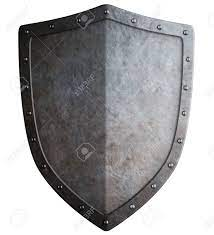

El Páramo Salvaje
Vas caminando por un páramo donde solo encuentras tierra, polvo y un implacable Sol. Sos un caballero que hace muchas leguas atras venías en el rescate de una damisela en peligro. Hace un par de leguas tomaste el camino equivoicado entrando en el Páramo Salvaje. Y ahora te quitaste toda la armadura caliente de metal porque básicamente podías fritar un huevo de codorniz encima. Entre la distorción que provoca el calor, ves salir del suelo unos ladrones del páramo. Son unos Goblins en busca de pertenencias valiosas.Llevas tu cantimplora, espada y el escudo. Tienes que decidir rápido qué usar...
Decides usar tu espada... Decides usar tu escudo... Decides usar tu cantimplora...Desenfundas tu brillante espada. Forjada en Dambidur, la madre de todas las forjas, tiene el filo y la resistencia de los Altos Dioses Desconocidos. Capaz de cortar el aire, empuñádola recuerdas todas las historias en las que esta espada legendaria a salvado tu pellejo. Lástima que ahora estás demaciado cansado y deshidratado para poder cortar lo que sea. Los Goblins esquivan sin problemas tus intentos de cortes. Al final te roban hasta la espada. En ese momento decides que ya pasaste por mucho. No vale la pena rescatar a la princesa...
¿Quieres volver a intentarlo?Te pones en guardia con el escudo sobre tu hombro. Los goblins se avalanzan sobre tí, pero logras empujarlos y golpearlos. No duras mucho, estar bajo un escudo de metal en le medio de un pseudo desierto tiene sus efectos. Terminas desmayado por el golpe de calor y los asaltantes te atan de pies y manos. Al despertar estas encadenado al lado de la princesa en el calabozo de tu mortal enemigo, el trasgo legendario: "Franklin". —"Llegaste justo para la hora del té". Te dice entre risas.
 ¿Quieres volver a intentarlo?Decides arrojarles tu cantimplora a estos endemoniados ladrones. Tuviste la suerte de que le pegaste a uno en la cabeza dejándolo dormido en el suelo. El resto huye despavorido por tal fortuita asaña. Te acercas al único goblin que quedó en el piso para atarlo de pies y manos. Al despertar a las horas lo interrogas. Él confieza y habla de más solo con preguntarle el nombre. Termina contándote hasta donde se encuentra la princesa que fue raptada por tu mortal enemigo. Le agradeces la información y lo llevas como esclavo, dejándolo llevar tu escudo y espada. Cada vez que lo vez intentando hacer algo raro, lo amenazas con tu cantimplora, y eso siempre lo pone en su lugar...
¿Quieres volver a intentarlo?Sobre el Autor
Juan Pablo Campo
Nació en la Ciudad de Ushuaia, Tierra del fuego, en 1997. Recibido como contador se dedica al desarrollo de páginas web. Trabaja para Motorola Argentina. Publicó varias tiras cómicas, cuentos y microrelatos en el periódico Clarin. El presente relato fue el ganador del Concurso "Frida, más allá del Relato" de Ciudad de México, 2018.